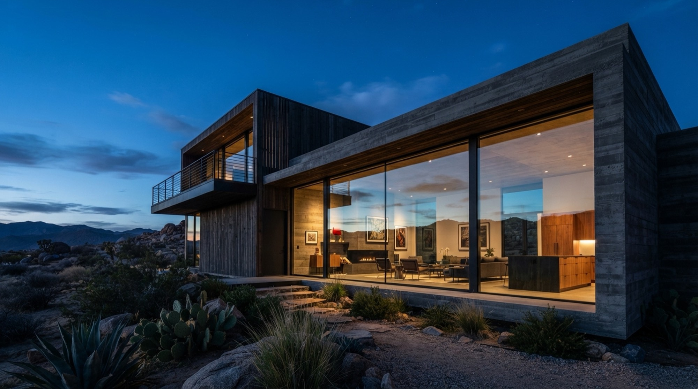

Splash Labs
Propuesta de posicionamiento de marca
$1.000 mensuales · servicio continuo
Preparado para IIM Promotora Inmobiliaria por Splash Labs
Fondo: trabajo previo de Splash Labs para otro proyecto. No corresponde a IIM.
Qué reciben cada mes
| Entregable | Cantidad |
|---|---|
| Piezas de video verticales editadas | 10 |
| Fotografías finales seleccionadas y retocadas | 8 |
| Jornada de producción en sitio | 1 |
| Calendario de publicación del mes | 1 |
| Guion y estructura de la jornada | 1 |
Composición de las 10 piezas
| Tipo | Cantidad | Función |
|---|---|---|
| Vocero a cámara | 4 | Autoridad, lectura de mercado, criterio |
| Producto con dron | 3 | Impacto visual, material de pauta |
| Proceso y detrás del desarrollo | 2 | Cercanía, prueba de trabajo real |
| Datos o mercado (motion, sin rodaje) | 1 | Flexibilidad si falta material |
Material publicable real
Las 10 piezas editadas no son todo lo que IIM recibe. Cada jornada genera material que sirve por separado, y se entrega completo.
| De dónde sale | Qué reciben | Cantidad aproximada |
|---|---|---|
| Piezas editadas | Videos listos para publicar y pautar | 10 |
| Planos de dron de las piezas de producto | Clips individuales seleccionados y corregidos | 15 |
| Planos de apoyo de las piezas de proceso | Clips individuales de sitio y obra | 6 |
| Sesión fotográfica | 8 fotos en formato horizontal y vertical | 16 archivos |
Alrededor de 47 activos publicables al mes.
Cada plano de dron funciona por sí solo en historias, como fondo de una publicación o como pieza de pauta. Lo mismo con los planos de sitio. Son materiales que ya existen dentro del proceso de producción y se entregan sin costo adicional.
La jornada mensual
Un solo día de rodaje alimenta todo el mes:
- ABloque de 2 horas de [VOCERO] a cámara
- BVuelos de dron
- CPlanos de apoyo en sitio
- DSesión fotográfica en ambos formatos

Trabajo previo · No corresponde a IIM
Trabajo previo de Splash Labs
Piezas producidas para otros proyectos. No corresponden a IIM.
-
San Patricio Presentadora frente a cámara y material de apoyo
-
San Patricio · Avance del proyecto Video con IA
-
San Patricio · Skypark Video con IA a partir de renders
-
San Patricio · Oficinas Video con IA a partir de renders
-
San Patricio Fotograma de video con IA
-
San Patricio · Skypark Fotograma de video con IA
-
San Patricio · Skypark Fotograma de video con IA
-
San Patricio · Oficinas Fotograma de video con IA
Proceso
Semana de preproducción semana previa al inicio del ciclo
| Día | Qué pasa |
|---|---|
| 1–2 | Entrega del calendario del mes y guion de la jornada |
| 3 | Aprobación del calendario por parte de IIM |
| 4 | Confirmación de fecha y locación de la jornada |
Ciclo de producción
| Semana | Qué pasa |
|---|---|
| 1 | Jornada de producción en sitio · aprobación del plan de la semana |
| 2 | Producción de las primeras 5 piezas y edición fotográfica |
| 3 | Entrega del primer bloque: 5 piezas + 8 fotos + material suelto · revisiones · aprobación del plan |
| 4 | Entrega de las 5 piezas restantes · revisiones |
Aprobación semanal asíncrona: al inicio de cada semana se confirma por mensaje qué sale y qué se publica. Reunión formal una vez al mes, en preproducción.
Fecha alterna de rodaje dentro de la misma semana por condiciones climáticas.
Automatización — pago único
Setup de ManyChat
$200 una sola vez
Incluye árbol de conversación, calificación de leads, agendamiento y capacitación a una persona de IIM para editarlo.
La cuenta, la suscripción y los datos de los leads son de IIM. Una vez entregado y capacitado, el sistema queda a disposición de ellos. Si necesitan ayuda posterior, soporte puntual a $80.
Splash Labs implementa el sistema; la respuesta a los leads y la conversión dependen de IIM.
Adicionales
| Servicio | Tarifa | Con servicio activo |
|---|---|---|
| Pieza larga o carrusel editorial | $180 | $150 |
| Pieza corta extra | $90 | $75 |
| Fotografías adicionales | $30 c/u | $25 c/u |
| Jornada de rodaje extra en el mes | $250 | $200 |
| Ronda de revisión adicional | $90 | $75 |
Tarifa preferencial mientras el servicio esté vigente.
Condiciones
- Aprobador único.
- [APROBADOR] aprueba calendario y piezas. Sin aprobación por escrito o en reunión registrada, no se inicia producción. Lo aprobado no se revisa después por terceros.
- Dos rondas de revisión por pieza.
- Cubren textos, música, orden y duración de planos, color, sobre la pieza ya aprobada en concepto. No cubren regrabar, cambiar concepto ni guion.
- Aprobación semanal.
- Al inicio de cada semana se confirma el plan de esa semana.
- Fecha fija de jornada.
- Acordada entre IIM y Splash Labs con anticipación. Si no se graba en la fecha acordada ni en la alterna, el mes se produce con el material disponible y no se acumula.
- Insumos de IIM.
- [VOCERO] presente en la jornada · acceso rotativo a locaciones (obra en curso, proyecto terminado, terreno nuevo, oficina) · datos de ventas y proyectos que sustenten el contenido de resultados.
- Pago.
- 50% al inicio de cada mes, 50% contra entrega del bloque completo.
- Terminación.
- Cualquiera de las partes puede terminar el servicio con 30 días de aviso.